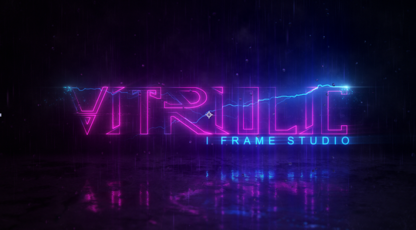

Mods
Immersive-ish Research Solo Project
C# XML Unity
An overhaul mod for the researching game mechanics of the sci-fi colony sim game 'Rimworld'
Read more...

Developed in combination of C# and XML, Immersive-ish Research was designed as a complete overhaul of the original game's research mechanic, adding a new level of immersion and difficulty to the game.